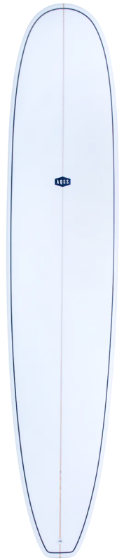

대체적으로 롱보드와 비슷하며
조금 더 모던하고 현대적이라는 것이 특징입니다.
허나, 롱보드에 비해 작은 볼륨과 부피는
보다 더 빠른 방향전환과 높은 기동성 만듭니다.
롱보드에 비해 가볍고 작지만
숏보드와 같이 역동적인 터닝 기술은 어렵습니다.
이러한 특징은 초보자에게 적합하며
실제로 굉장히 많은 서퍼들이 미니 말로 시작합니다.
또한, 미니 말은 펀 보드, 미드-랭스 등
많은 이름이 있습니다.
턴을 연습해 보아요
보드와 함께 우리의 미학을